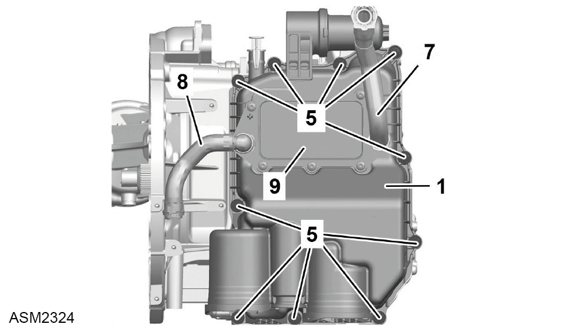
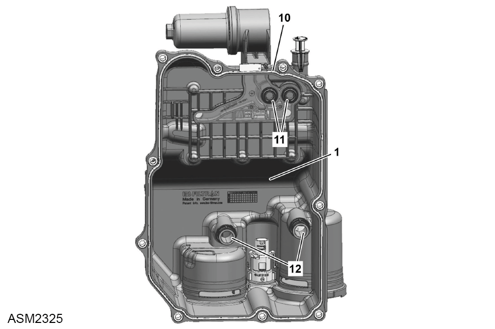

Oil Pan - 4 Cylinder
Print
Operation Code: 47.02.09-02
Important Information
 WARNING: Transmission oil is a toxic substance and can be lethal if ingested. Wear protective gloves, protective clothing and safety glasses.
WARNING: Transmission oil is a toxic substance and can be lethal if ingested. Wear protective gloves, protective clothing and safety glasses.
Removal
- Drain transmission oil. Refer to procedure.

- Install clamps to coolant hoses (7 and 8).
- Release spring clips (x2) securing coolant hoses to oil cooler (9).
- Disconnect coolant hoses (x2) from oil cooler.
NOTE: Plug exposed connections to prevent ingress of dirt.
- Remove bolts (5) (x10) securing oil pan (1) to transmission. Torque 10 Nm.
- Remove oil pan.
NOTE: Drain oil into a suitable container and dispose of appropriately.

- Remove and discard oil pan gasket (10).
- Remove and discard molded seals (11) (x2).
- Remove and discard plain couplers (12) (x2) with
sealing rings.
Installation
- Installation is the reverse of removal procedure except for the following:
- Clean component mating faces, prior to installation.
WARNING: Only use cleaning agents and solvents in a well ventilated area.
- Renew all discarded seals and gasket.
- Install bolts in a diagonal sequence.
- Check and top up coolant level.